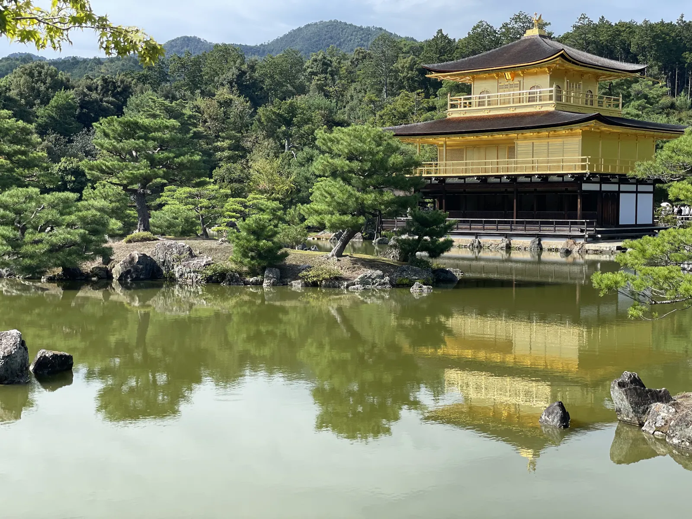
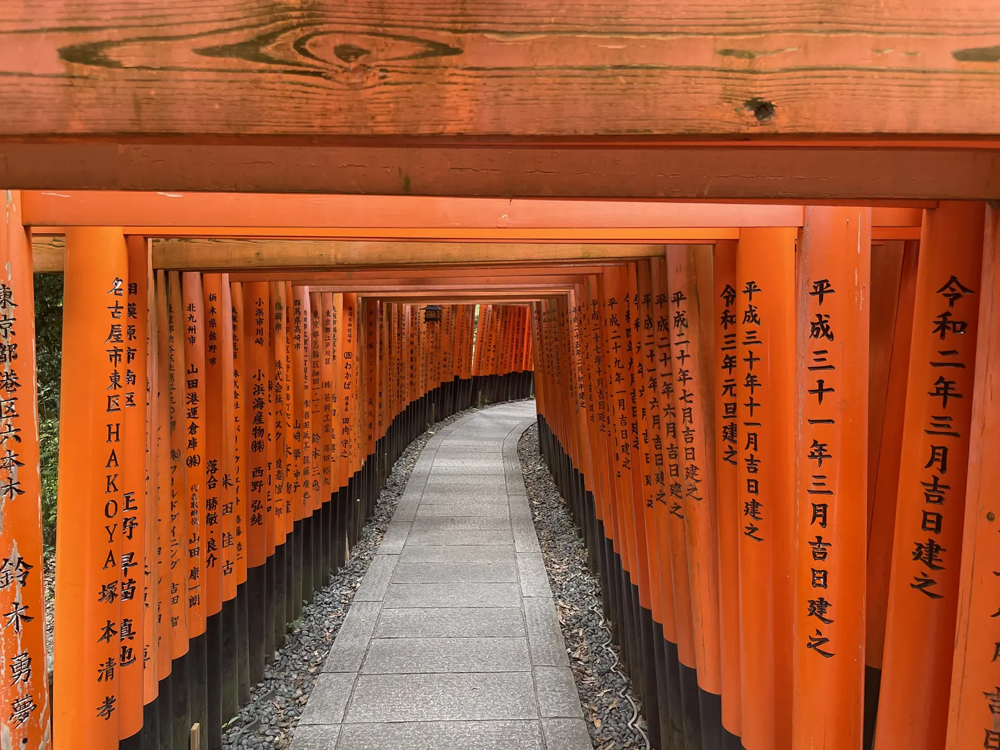
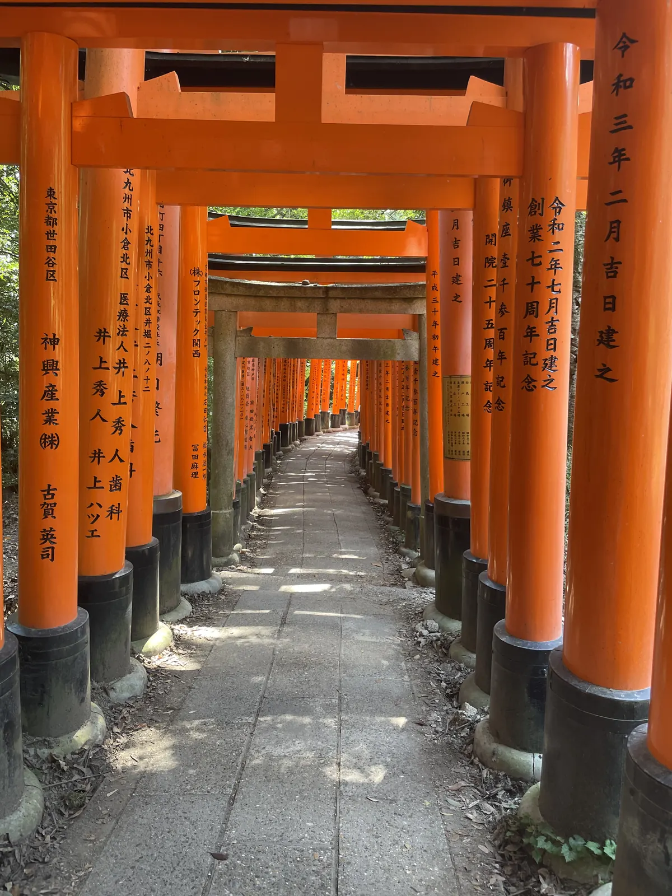
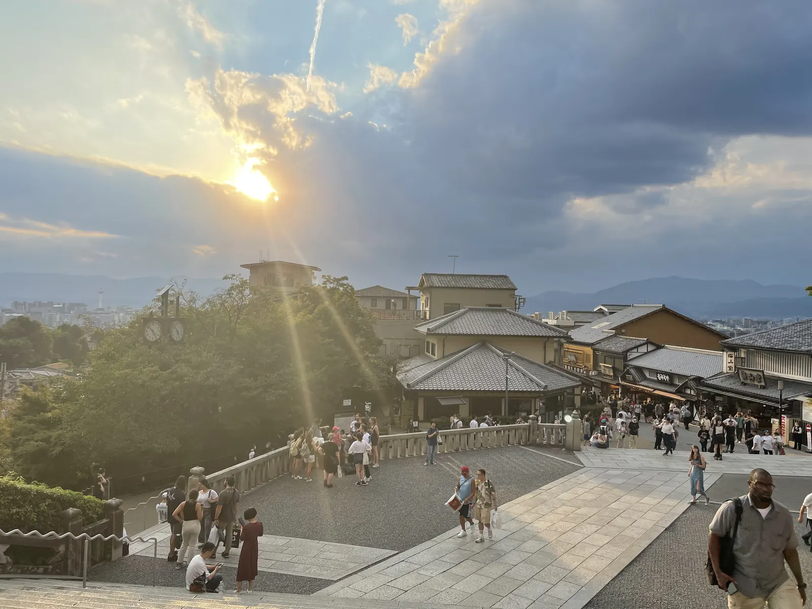
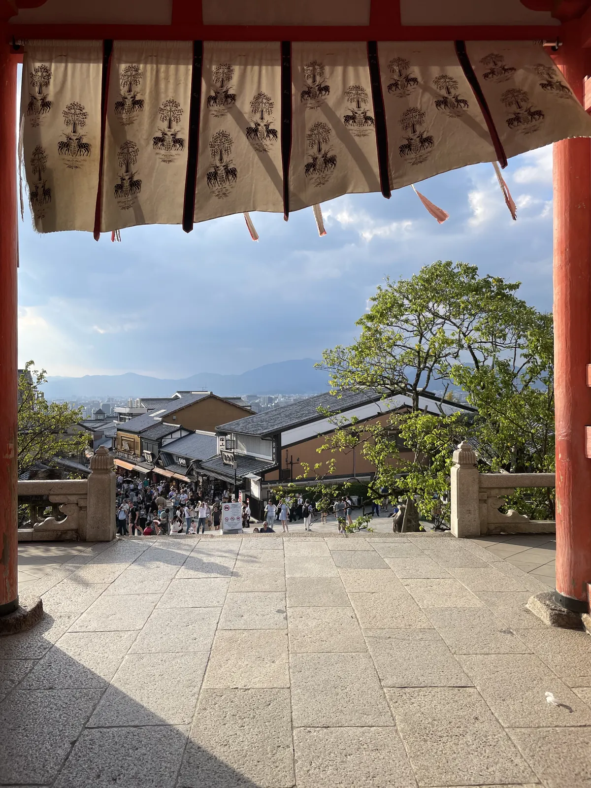
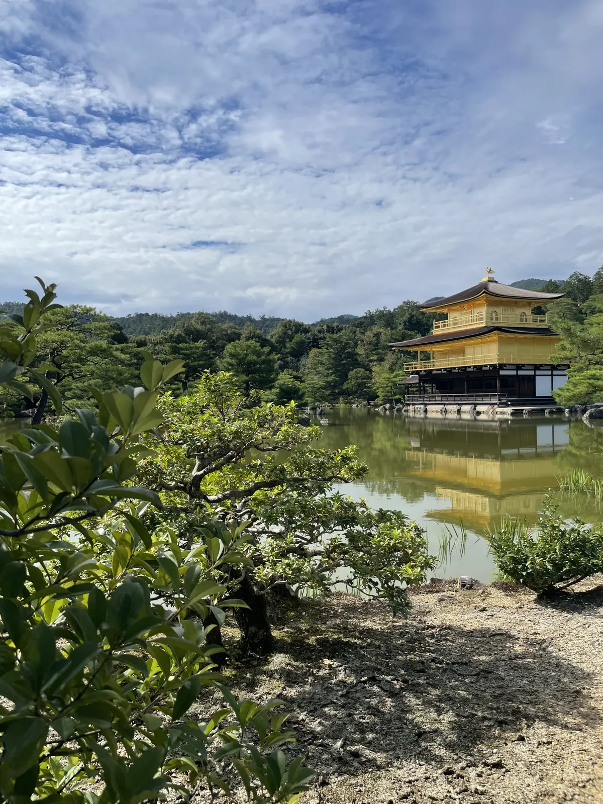
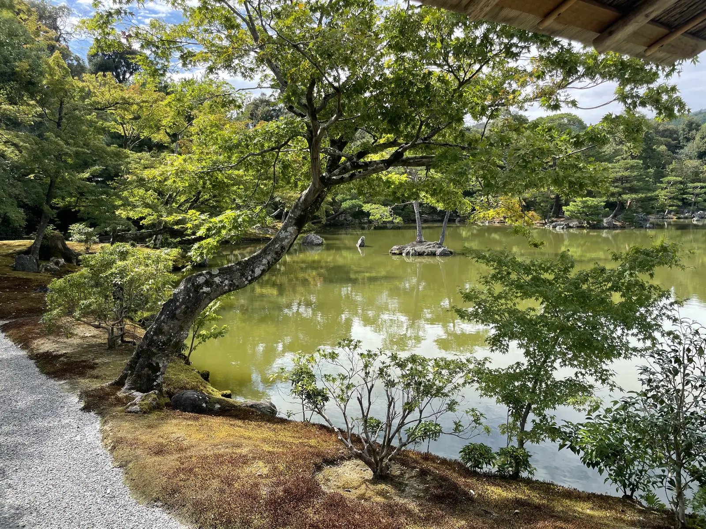
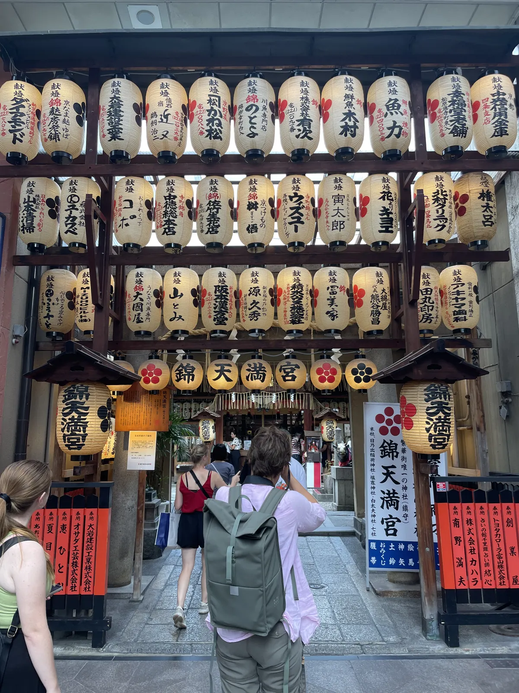
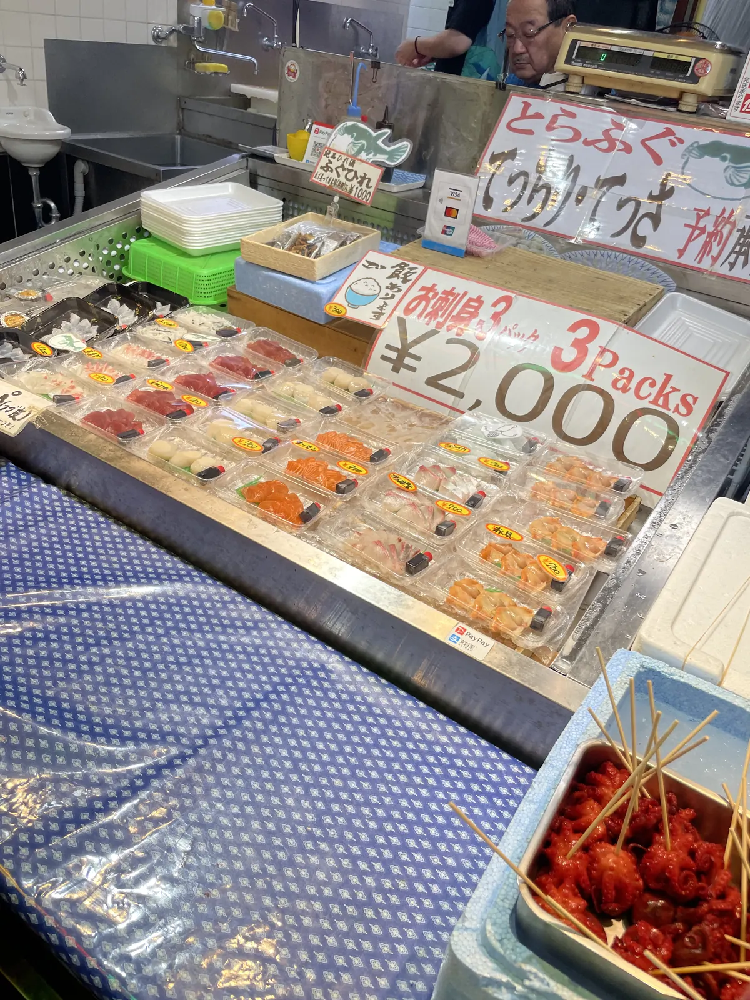

🇯🇵 Kyoto Guide: 12 places – Fushimi Inari, Higashiyama, Arashiyama & hidden gems

Table of contents
Kyoto was the emperor’s capital for over a thousand years. Today you share the highlights with many people – unless you come early. Prices and times are guidelines (2026).
🗺️ Map: 12 places at a glance
My story in Kyoto
At 6 am the thousand gates of Fushimi Inari were almost all mine – for me, the moment Kyoto made sense. My advice: give the first hours to Fushimi Inari, then Higashiyama while the lanes are still quiet. What stays most in Japan is something small: how people treat each other. Kindness costs nothing.
This guide contains affiliate links (GetYourGuide, Omio). If you book through them I earn a small commission – you never pay a cent more. Prices and opening hours change – double-check before you go.
🆓 Free things to do
6 places in Kyoto you can enjoy without an entry fee or completely free (for some, only a part costs extra, e.g. a tower or museum):
At a glance
Getting there and around
You reach Kyoto by shinkansen from Tokyo (about 2.5 hours) or from Osaka in around 15–30 minutes; check current timetables and tickets beforehand. In town bus, subway and taxi help; Fushimi Inari lies directly on the JR Nara line.
You reach Kyoto from Osaka by train in about 30 minutes, from Kansai Airport (KIX) by the Haruka Express in about 75 minutes (check timetables beforehand). In the city trains, metro and buses run; buses are heavily overcrowded in high season – use trains and metro where possible or rent a bike.
Kyoto station is the central hub. An IC card (ICOCA) makes paying easier. Temples and shrines usually open around 8 to 9 a.m. and close in the late afternoon.
1. Must-sees
Fushimi Inari Taisha🆓 Free to experience
At 6 am the thousand gates were almost all mine. The shrine is open around the clock and free; come as early as possible and bring water.
Fushimi Inari Taisha is dedicated to the rice god Inari and famous for its thousands of red torii lining a path up the mountain. The loop to the summit (about 230 metres above the shrine) takes about two to three hours; the first 20 to 30 minutes through the dense gates are enough for the classic picture. Fox statues, Inari’s messengers, stand everywhere.
Take water and wear comfortable shoes. If you really want peace, come at sunrise or very early in the morning; from 9 a.m. it gets crowded. The shrine is open around the clock and free.
Tip: Come at sunrise and walk higher than most – it gets emptier at the top.


Higashiyama🆓 Free to experience
Then Higashiyama while the lanes are still quiet: wooden houses, temples and teahouses on the hillside.
Higashiyama is Kyoto’s best-known old district on the hillside. The lanes Ninenzaka and Sannenzaka lead to Kiyomizu-dera; in between are wooden houses, tea houses, ceramics shops and sweet stalls. If you come early you experience the quiet before the tour groups arrive.
Wear comfortable shoes, because there is a lot of uphill. Kyoto matcha ice cream and mochi are popular here. Do not stay only on the main streets – in the side lanes you find small shrines and quiet corners.
Tip: Come before 8 a.m. – then the lanes are empty and the light is soft.
Kiyomizu-dera
Kiyomizu-dera is a temple from the year 778, famous for its large wooden terrace that rests without nails on tall pillars over the slope. From there you look over the forest and the city. In spring the cherry trees bloom, in autumn the foliage glows; then the temple is partly lit in the evening.
Admission is charged (check prices beforehand). Below the temple the Otowa waterfall springs with three streams from which visitors drink. Plan one to two hours.
Tip: Go early in the morning or at evening illumination – by day it is crowded.


Gion & Hanamikōji🆓 Free to experience
Gion is Kyoto’s traditional entertainment district with wooden houses, tea houses and restaurants. With luck you see geiko and maiko (geisha in training) when they go to their appointments in the evening. Hanamikōji-dōri is the best-known lane.
Respect the people: do not crowd geiko and maiko and do not photograph them from close up. In some private lanes photo bans and fines apply – heed signs. Gion is most beautiful at dusk.
Tip: Come at dusk and heed the signs in the private lanes.
Arashiyama – bamboo grove & Tenryū-ji🆓 Free to experience
The Arashiyama Bamboo Grove is a narrow path between metre-high green bamboo stems that rustle in the wind. Right next to it lies Tenryū-ji, a UNESCO temple with a beautiful garden. The Togetsukyō Bridge over the Katsura River and small shops make the district a popular destination.
The bamboo grove is often overcrowded from noon; come at sunrise. Behind the temple a path continues through bamboo into the quieter hinterland. Plan half a day; getting there by train is easy.
Tip: Come before 8 a.m. and combine it with the temple of the 1,200 stone figures.
Kinkaku-ji – the Golden Pavilion
Kinkaku-ji is a Zen temple whose upper floors are covered in gold leaf and reflected in the pond. The current building was rebuilt in 1955 after a fire. A circular path leads through the garden, and you can drink a tea.
The pavilion is very popular; come in the morning at opening. Check admission and opening times beforehand. Plan an hour.
Tip: Come at opening – later people queue.


Philosopher’s Path & Ginkaku-ji🆓 Free to experience
The Philosopher’s Path is a quiet walk along a canal lined with cherry trees, with small temples and cafés. It leads to Ginkaku-ji, the Silver Pavilion, which despite its name is not silvered but has a lovely moss garden and a sand garden.
The path is most beautiful during the cherry blossom in spring or in autumn foliage. Plan two to three hours; combine it with Higashiyama.
Tip: Start at Ginkaku-ji early and walk south.
Nishiki Market – Kyoto’s kitchen🆓 Free to experience
Nishiki Market is a covered lane with about 100 shops where food has been sold for centuries. You find pickled vegetables (tsukemono), tofu, fish, sweets and street food. Try tamagoyaki on a stick, soy-milk doughnuts and matcha sweets.
The market is narrow and crowded at midday. Note: in the lane you should not eat while walking – eat at the stall. Many shops close in the late afternoon. Plan an hour.
Tip: Come in the morning and eat at the stall.


2. Hidden gem
Temple of 1,200 stone figures (Otagi Nenbutsu-ji)💎 Hidden gem
Nijō Castle – the nightingale floors💎 Hidden gem
Nijō Castle was built in 1603 for the shōgun Tokugawa Ieyasu and is a UNESCO World Heritage site. Special are the “nightingale floors” (uguisubari): wooden floors that chirp with every step to betray intruders. The rooms of the Ninomaru Palace are decorated with murals in gold.
The garden is especially beautiful in spring. Plan two hours; check admission beforehand. An audio guide is worthwhile.
Tip: Get an audio guide and come right at opening.
Kurama–Kibune – mountain hike💎 Hidden gem
North of Kyoto lie the mountain villages of Kurama and Kibune. Between the two a hiking trail leads over a ridge, past temples, cedars and roots. You can do the hike in about two hours and travel there with the small Eizan railway.
In Kibune there are restaurants whose terraces float above the river in summer (kawadoko). If you come in summer you get cool air; in autumn the foliage is especially beautiful. Take sturdy shoes.
Tip: Start in Kurama and eat lunch in Kibune.
Ōhara & Sanzen-in💎 Hidden gem
Ōhara is a rural place north of Kyoto with the temple Sanzen-in, known for its moss-covered garden and small Jizō figures. The path to the temple leads through a village with shops and pickle stalls.
You get there by bus (about 45 minutes, check timetables beforehand). Ōhara is quiet and a good chance to escape the bustle in Kyoto. Plan half a day.
Tip: Go early and eat lunch there.
What makes Japan special
Kyoto was the emperor’s capital from 794 to 1869. From the 17th century Japan sealed itself off almost completely for about 200 years. Only with the Meiji Restoration in 1868 did the country open – which is why wooden temples and skyscrapers often stand side by side today.
📍 Save this guide to Google Maps
1. Quick: open as a route
2. Permanent: as your own map (2 minutes)
- Download the file with all pins (KML button below).
- Open Google My Maps → “Create a new map” → “Import” → choose the file.
- Done – every place sits exactly where it should, with number, tip and a link back to the guide.
- In the Google Maps app the map appears under “Saved” → “Maps”, also on the go.
⬇️ All pins for Google Maps (KML) ⬇️ Download place list (CSV)
3. Save one by one
Your plan
Day 1: Day 1 – Mountain & old town
- Early (6 a.m.) – Fushimi Inari
- Morning – Higashiyama and Kiyomizu-dera
- Midday – Nishiki Market
- Evening – Gion at dusk
Day 2: Day 2 – Arashiyama & gold
- Early – bamboo grove and Tenryū-ji
- Morning – temple of the 1,200 stone figures
- Afternoon – Kinkaku-ji
- Evening – Nijō Castle or Philosopher’s Path
FAQ
When is Fushimi Inari emptiest?
Early in the morning – Noel was there at 6 am.
How many days do you need in Kyoto?
When is the best time to visit Kyoto?
🗺️ All places on my map → More guides and reels on Instagram: @hiddengem.atlas
Share this guide: On WhatsApp